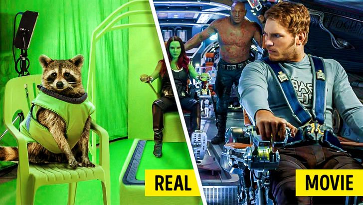

From the muscle-bound dad in The Incredibles, to the dinosaurs running wild in Jurassic Park, to Brad Pitt aging backward as Benjamin Button, Ira Flatow and guests look at the evolving technology used to create characters and visual effects on the silver screen.